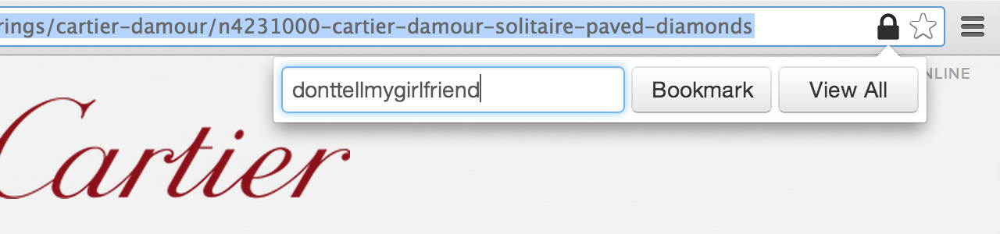
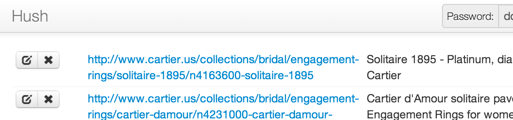
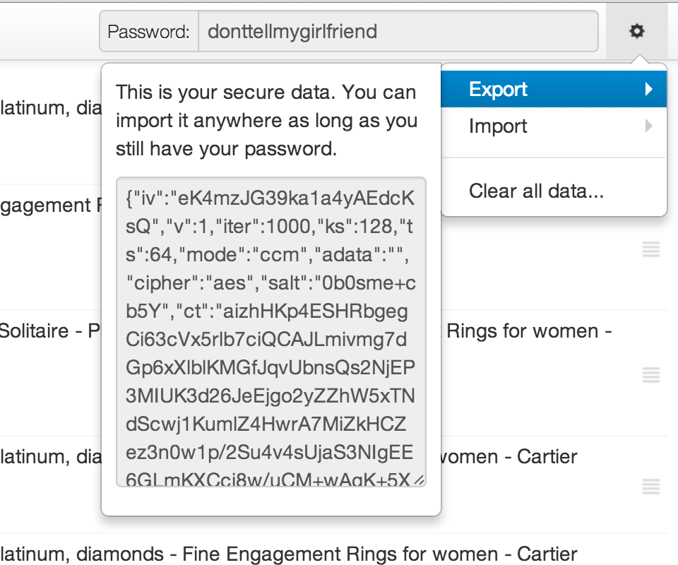
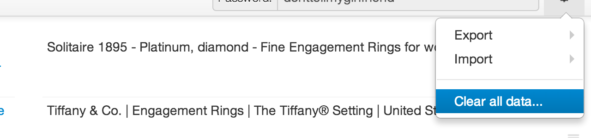
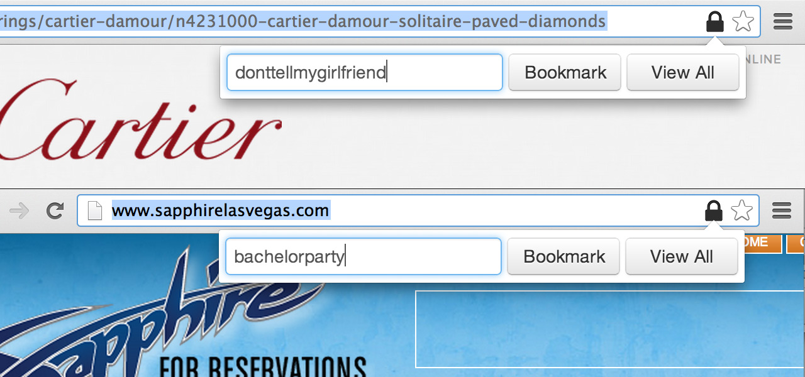

Simple, secure private bookmarking for incognito browsing.
The seed for the idea was planted when G was in the process of searching for an engagement ring for his girlfriend. She used his computer all the time, so he couldn’t save any bookmarks, and alternatives such as using Dropbox or a Google doc to hold links proved to be far too inefficient.
Over beer, we decided that the optimal solution to this problem was private bookmarking, and out of it grew Team Euler’s first product: Hush. The goal was straightforward: while browsing in incognito mode, enter a password to save encrypted bookmarks, then use the same password to access them.
Using Hush is as easy as clicking an icon in your address bar, typing in your password, then clicking a button — adding and viewing bookmarks are both done this way.

You can edit or remove bookmarks as you wish in our simple management page.

Even exporting and importing encrypted sets of bookmarks is as easy as copy-pasting.

Each set of bookmarks you create is encrypted using industry-standard AES encryption, using a key that only you know, then stored securely on your computer. We don’t send anything back to our servers, so your data will always be under your complete control.
Done with a set of bookmarks? Just click the Delete button, and your data will be erased permanently.

You can have multiple sets of bookmarks, each with its own key. We highly recommend doing this for different types of bookmarks — this way, you can use a longer/less guessable key to protect more important data, and a shorter one for data you’d rather access more easily.
